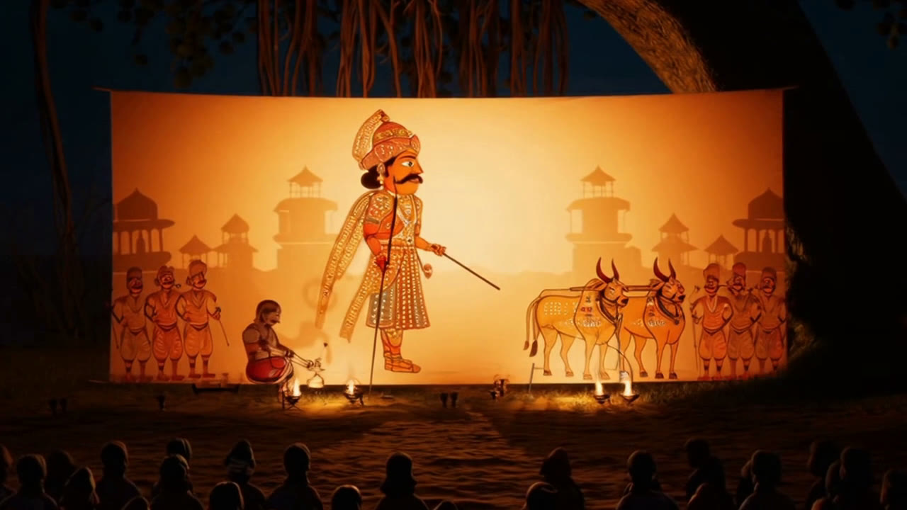
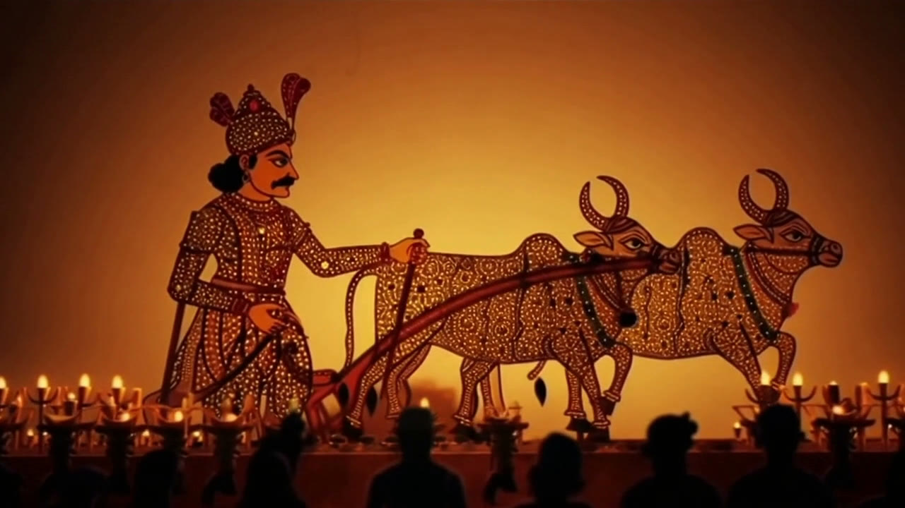
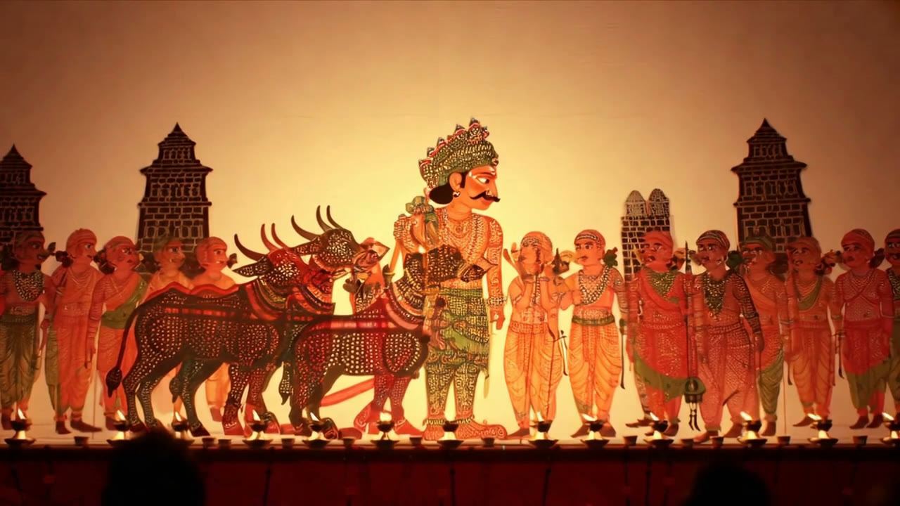
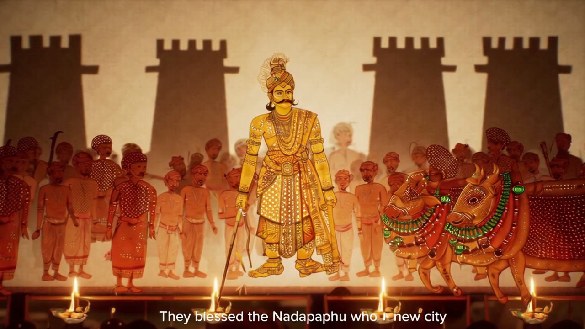
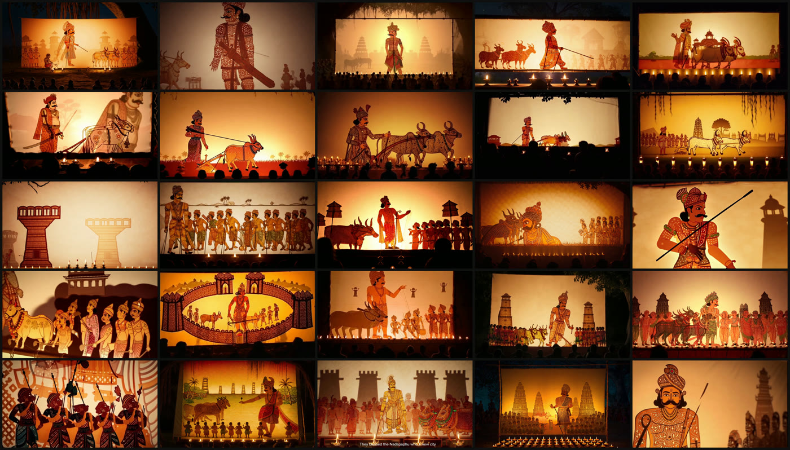

Under a banyan tree, a storyteller lights the brass oil lamps. Temple bells wake the night. The village settles onto the earth. And on a stretched cotton screen, backlit by fire, a legend begins to move — coloured leather puppets, perforated like lace, telling of a chieftain who dreamed a city into being.
That screen is Togalu Gombeyaata, the traditional shadow-puppet art of Karnataka. The legend is Kempegowda, the 16th-century Nadaprabhu who, in 1537, yoked a pair of white bullocks to a plough and furrowed the four cardinal streets of the town that became Bengaluru. And the whole thing — every puppet, every lamp, every voice — was generated and edited with AI, over a handful of evenings.
This is the build log: what I made, how I made it, the bugs I hit, and the two reusable skills that fell out of it.
The Images
The visuals came from Sora 2 (on Azure AI Foundry). The trick with a multi-scene film isn't generating a clip — it's stopping every clip from drifting. Independent generations wander: the hero's turban changes, the palette shifts, the backlit screen becomes a photoreal sunset. So I built a locked Style Bible and a five-beat grammar, injected verbatim into every scene.
Invocation → Character → Journey → Conflict → Resolution → Moral.the scene grammar, repeated for every clip
A 25-scene, ~5-minute film rendered at twelve seconds a clip, then stitched with a shared warm-firelight colour grade and crossfades. Kempegowda stayed Kempegowda. The bullock-pair stayed a pair. The lamps never went out.

🪔 The one bug that taught me the Style Bible
Scene 3 (the Journey) drifted hard — a black night sky, palm silhouettes, a sunset, a single ornate bullock — while every other scene stayed on the flat amber screen. The culprit was one line in the skill's journey emphasis: "movement across the screen past Indian landscapes, palaces, forests, rivers and temples." Sora read it as paint a real location. I reworded it to keep all scenery as flat cut-leather silhouettes on the same backlit screen — regenerated the one scene, re-stitched, and the drift was gone.

The Voice
The first cut narrated itself beautifully… in Kannada. Sora speaks whatever language your style-bible names — my audio field had said "a wise elder Kannada storyteller." I confirmed it by transcribing the film with gpt-4o-transcribe, which read back fluent Kannada prose. Lovely — but I wanted an English cut.
Simply asking Sora for an English narrator worked. But I wanted more control — and, crucially, I wanted to re-voice the film without losing its soul: the veena, the mridangam, the temple bells and crickets Sora had generated.
Keep the music. Change the voice.the whole editing problem, in four words
The catch: Sora bakes narration and music into a single track. So I used Demucs (a source-separation model) to split the film's audio into vocals (the old narration) and everything else (music + night ambience). I dropped the vocals, kept the music bed, and laid a fresh Azure Neural voice on top — gently side-chain ducking the music under the narration and remuxing onto the untouched video. The visuals never re-rendered; the music survived; the story changed.

The Cast
One narrator became a company. A warm male elder (en-IN-Prabhat) carried the through-line; a female voice (en-IN-Neerja, with empathetic and cheerful express-as styles) took the lyrical and joyful beats; and for the invocation, the rally, and the closing moral, both spoke — alternating lines, then a unison chant to end:
Remember Kempegowda.the finale — two voices, one line
The first multi-voice cut had two problems, and both were honest lessons. The opener sounded robotic — I'd pushed the prosody too far (-8% rate, -2st pitch), and pitch-shifting artifacts crept in. And the narration stopped after ninety seconds — a real bug (more below). I softened every line to a gentle storyteller pace, fixed the offsets, and then reached for Azure's most human voices: the DragonHD family (en-IN-Arjun, en-IN-Neerja). They read so naturally that no segment needed any time-stretching at all. That became the flagship cut.

The Four Voices
Same film, four narrations — identical visuals, identical Sora music/ambience, four different storytellers. Here they are, side by side.
These are compressed 480p previews, self-hosted so the page works out of the box. The complete branded episode below is that same DragonHD cut — now with its opening jingle in front and end-credits at the close.
The Finished Episode — jingle in front, credits at the end
The four voices were the middle of the tale. To make it a channel, I built a third skill — togalu-brand-bumpers — that tops and tails any film with a generated opening jingle and a scrolling end-credits. The ident holds on the Togalu Gombe Aata medallion, then the backlit screen parts open like a curtain onto a Sora journey — a leather map of India gliding to a Karnataka sunset, the theatre rising, and a hand-perforated leather Ganesha entering in invocation. The channel's name is spoken in Kannada — ತೊಗಲು ಗೊಂಬೆ ಆಟ — by a native voice. Then the film plays, and the credits roll to a Directed by card.
Under the Lamp — the Pipeline
Everything runs on Azure with Microsoft Entra (AAD) auth — no API keys — orchestrated from the terminal.
The Craft Notes — every change, step by step
Two reusable skills came out of this. Here is the exact sequence of changes I made to each.
Skill 1 — togalu-gombe-video (the film generator)
1 · Killed the Journey drift consistency
scripts/generate_togalu_video.py · SCENE_EMPHASIS["journey"]
Reworded the journey beat so landscapes render as flat cut-leather silhouettes on the same backlit screen — never a photoreal location, night sky or sunset. Regenerated scene 3 and re-stitched.
2 · Banished burned-in captions quality
generate_togalu_video.py · "Avoid" block
Sora slipped a typo'd subtitle into one scene. Added "no on-screen text, subtitles, captions, watermarks or written words" to the negative prompt; regenerated the offending scene.
3 · Made long films resumable workflow
generate_togalu_video.py · run_storyboard()
Added --resume (skip scenes already rendered) and --limit N (pilot the first N) so a 25-scene, ~1-hour run can be piloted, interrupted, and continued.
4 · Fixed a scene-ordering bug bug
scripts/stitch_video.py · _scene_index()
The sorter grabbed the first _<digits>_ in the filename — which matched the "5" in "5_min" — so clips stitched 10, 11, … 1, 20. Switched to the last numeric group.
5 · Documented the narration-language knob docs
SKILL.md · Audio Style
Captured the discovery: Sora narrates in whatever language the style-bible audio field names. Added a QA workflow (contact sheet + transcription) and the 25-scene, 5-minute English example.
Skill 2 — voice-dub (re-voice any video, keep the music)
6 · Built the dub engine new skill
scripts/voice_dub.py
A dub-script (JSON) drives four stages: separate the music bed (Demucs) → synthesize each segment (Azure neural) → duck & mix narration over the bed → remux onto the original video (-c:v copy, so visuals are untouched).
7 · Azure Speech over AAD auth
scripts/azure_speech.py
Keys are disabled on the resource, so TTS calls use the Entra format Authorization: Bearer aad#{resourceId}#{token} against the regional Speech endpoint, with SSML for express-as styles + prosody.
8 · Demucs without torchcodec py3.14
scripts/separate_music.py
On Python 3.14, torchaudio.save now demands torchcodec. Sidestepped it by running Demucs through its Python API and writing the stem with soundfile.
9 · One-speaker & multi-speaker feature
references/*.dubscript.json
Segments assign a voice per scene; two utterances in a segment alternate (male → female); a "unison": true utterance overlays voices into a short chorus for shared lines.
10 · Fixed the "narration stops at 1:30" bug bug
voice_dub.py · scene_offsets()
The offset math scanned the clips folder — and counted the ~292-second output films as if they were scenes, pushing later narration past the end of the video. Added a duration-outlier + name filter so finished cuts can safely sit in the same folder.
11 · De-robotified the delivery tuning
dubscript prosody
Softened aggressive prosody (dropped -8%/-2st) to a gentle -3% base, and kept lines short so no segment needed atempo > 1.2× — the two main sources of "robotic" audio.
12 · Added DragonHD + wrote the recipes docs
SKILL.md · schema · examples
Discovered DragonHD voices honor prosody but ignore express-as styles (and need no time-stretch). Folded the casting, alternating/unison, anti-robotic prosody, and full-film-span QA lessons into the skill.
Skill 3 — togalu-brand-bumpers (opening jingle & end credits)
13 · A studio ident that opens like a curtain new skill
scripts/make_intro.py · layout "open"
The logo medallion holds on a dim shadow-screen, then an FFmpeg horzopen transition parts the screen to reveal the Sora invocation — a proper title-sequence built from the exact brand PNG so the mark stays razor-sharp.
14 · Said the channel's name in Kannada localization
scripts/brand_tts.py · brand.json "spoken"
An English voice mangled “Togalu Gombe Aata”. Fix: write the name in Kannada script (ತೊಗಲು ಗೊಂಬೆ ಆಟ) and speak it with a Kannada voice, then the English descriptor in DragonHD — each segment in its own voice and xml:lang.
15 · A scrolling credits roll + a director card feature
scripts/make_credits.py
Pillow renders the credit strip (long lines auto-wrap); it scrolls over a dimmed backlit stage and settles on a prominent “Directed by Naveen Gopalakrishna” hold card.
16 · Split the jingle for an authentic Ganesha art direction
versions/v3 · clip A + clip B
v2's Ganesha read cartoonish. v3 splits generation: a custom-prompt journey (map → Karnataka → sunset → the theatre rises) crossfades into a Ganesha rendered through the film generator's anti-cartoon leather-puppet styling — scored with v2's music, which I kept.
17 · Made every export actually play bug
assemble.py · make_intro / make_credits
Windows refused the first branded cut (0x80004005): the FFmpeg xfade chain had emitted H.264 4:4:4 plus 96 kHz audio. Forced yuv420p (4:2:0) + faststart + 48 kHz on every final encode; −14 LUFS throughout. Every version is archived under versions/.

Moral
A city is not built by stone alone, but by far-seeing vision and selfless service.the elder's closing line
Kempegowda ploughed four furrows and imagined a city that would outgrow his sight by four centuries. Working on this, it struck me that AI is best when it does the same for our heritage — not replacing the puppeteer's lamp, but carrying its light to a new screen. The craft is 500 years old. It just found a longer run.
What folk story from your culture would you bring back to life under the lamp?